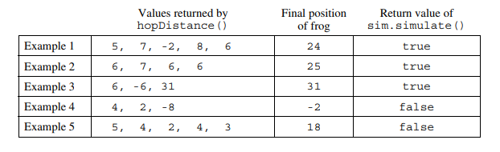
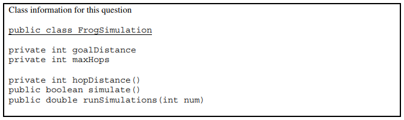
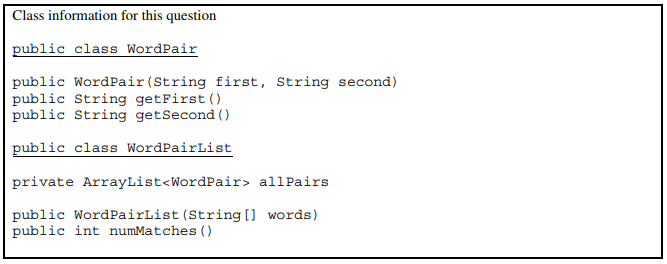
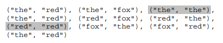
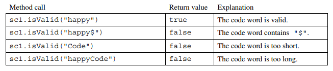
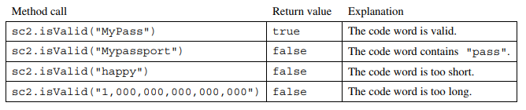
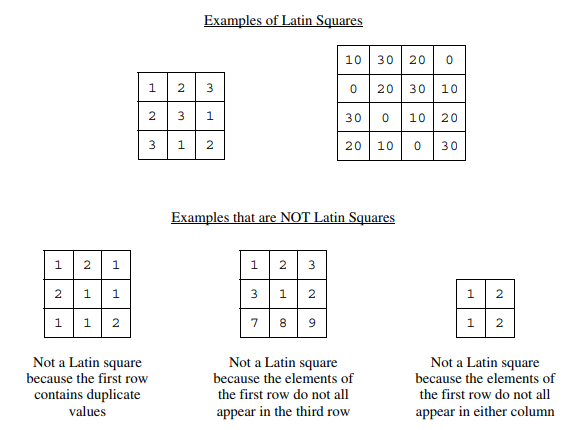
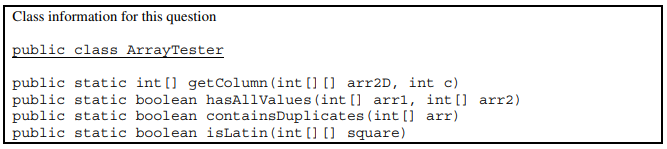

7. AP计算机2018年考试：主观题
I. This question involves reasoning about a simulation of a frog hopping in a straight line. The frog attempts to hop to a goal within a specified number of hops. The simulation is encapsulated in the following FrogSimulation class. You will write two of the methods in the class.
public class FrogSimulation
{
/** Distance, in inches, from the starting position to the goal. */
private int goalDistance;
/** Maximum number of hops allowed to reach the goal. */
private int maxHops;
/** Construct a FrogSimulation where dist is the distance, in inches, from the starting
* position to the goal, and numHops is the maximum number of hops allowed to reach the goal.
* Precondition: dist > 0; numHops > 0
*/
public FrogSimulation(int dist, int numHops)
{
goalDistance = dist;
maxHops = numHops;
}
/** Returns an integer representing the distance, in inches, to be moved when the frog hops.
*/
private int hopDistance()
{ /* implementation not shown */ }
/** Simulates a frog attempting to reach the goal as described in part (a).
* Returns true if the frog successfully reached or passed the goal during the simulation;
* false if otherwise.
*/
public boolean simulate()
{ /* to be implemented in part (a) */ }
/** Runs num simulations and returns the proportion of simulations in which the frog
* successfully reached or passed the goal.
* Precondition: num > 0
*/
public double runSimulations(int num)
{ /* to be implemented in part (b) */ }
}
(a) Write the simulate method, which simulates the frog attempting to hop in a straight line to a goal from the frog’s starting position of 0 within a maximum number of hops. The method returns true if the frog successfully reached the goal within the maximum number of hops; otherwise, the method returns false.
The FrogSimulation class provides a method called hopDistance that returns an integer representing the distance (positive or negative) to be moved when the frog hops. A positive distance represents a move toward the goal. A negative distance represents a move away from the goal. The returned distance may vary from call to call. Each time the frog hops, its position is adjusted by the value returned by a call to the hopDistance method.
The frog hops until one of the following conditions becomes true:
- The frog has reached or passed the goal.
- The frog has reached a negative position.
- The frog has taken the maximum number of hops without reaching the goal.
The following example shows a declaration of a FrogSimulation object for which the goal distance is 24 inches and the maximum number of hops is 5. The table shows some possible outcomes of calling the simulate method.
FrogSimulation sim = new FrogSimulation(24, 5);


Complete the method simulate below. You must use hopDistance appropriately to receive full credit.
/** Simulates a frog attempting to reach the goal as described in part (a).
* Returns true if the frog successfully reached or passed the goal during the simulation;
* false otherwise.
*/
public boolean simulate()
(b) Write the runSimulations method, which performs a given number of simulations and returns the proportion of simulations in which the frog successfully reached or passed the goal. For example, if the parameter passed to runSimulations is 400, and 100 of the 400 simulate method calls returned true, then the runSimulations method should return 0.25.
Complete method runSimulations below. Assume that simulate works as specified, regardless of what you wrote in part (a). You must use simulate appropriately to receive full credit.
/** Runs num simulations and returns the proportion of simulations in which the frog
* successfully reached or passed the goal.
* Precondition: num > 0
*/
public double runSimulations(int num)
II. This question involves reasoning about pairs of words that are represented by the following WordPair class.
public class WordPair
{
/** Constructs a WordPair object. */
public WordPair(String first, String second)
{ /* implementation not shown */}
/** Returns the first string of this WordPair object. */
public String getFirst()
{ /* implementation not shown */}
/** Returns the second string of this WordPair object. */
public String getSecond()
{ /* implementation not shown */}
}
You will implement the constructor and another method for the following WordPairList class.
public class WordPairList
{
/** The list of word pairs, initialized by the constructor. */
private ArrayList<WordPair> allPairs;
/** Constructs a WordPairList object as described in part (a).
* Precondition: words.length >= 2
*/
public WordPairList(String[] words)
{ /* implementation not shown */}
/** Returns the number of matches as described in part (b).
*/
public int numMatches()
{ /* implementation not shown */}
}
(a) Write the constructor for the WordPairList class. The constructor takes an array of strings words as a parameter and initializes the instance variable allPairs to an ArrayList of WordPair objects.
A WordPair object consists of a word from the array paired with a word that appears later in the array. The allPairs list contains WordPair objects (words[i], words[j]) for every i and j, where 0<=i<j<words.length. Each WordPair object is added exactly once to the list.
The following examples illustrate two different WordPairList objects.
Example 1
String[] wordNums = {"one", "two", "three"};WordPairList exampleOne = new WordPairList(wordNums);
After the code segment has executed, the allPairs instance variable of exampleOne will contain the following WordPair objects in some order.
{"one", "two"}, {"one", "three"}, {"two", "three"}
Example 2
String[] phrase = {"the", "more", "the", "merrier"};WordPairList exampleTwo = new WordPairList(phrase);
After the code segment has executed, the allPairs instance variable of exampleTwo will contain the following WordPair objects in some order.
{"the", "more"}, {"the", "the"}, {"the", "merrier"}{"more", "the"}, {"more", "merrier"}, {"the", "merrier"}

Complete the WordPairList constructor below.
/** Constructs a WordPairList object as described in part (a).
* Precondition: words.length >= 2
*/
public WordPairList(String[] words)
(b) Write the WordPairList method numMatches. This method returns the number of WordPair objects in allPairs for which the two strings match.
For example, the following code segment creates a WordPairList object.
String[] moreWords = {"the", "red", "fox", "the", "red"};WordPairList exampleThree = new WordPairList(moreWords);
After the code segment has executed, the allPairs instance variable of exampleThree will contain the following WordPair objects in some order. The pairs in which the first string matches the second string are shaded for illustration.

The call exampleThree.numMatches() should return 2.
Complete method numMatches below.
/** Returns the number of matches as described in part (b)
*/
public int numMatches()
III. The StringChecker interface describes classes that check if strings are valid, according to some criterion.
public interface Stringchecker
{
/** Returns true if str is valid. */
boolean isValid(String str);
}
A CodeWordChecker is a StringChecker. A CodeWordChecker object can be constructed with three parameters: two integers and a string. The first two parameters specify the minimum and maximum code word length, respectively, and the third parameter specifies a string that must not occur in the code word. A CodeWordChecker object can also be constructed with a single parameter that specifies a string that must not occur in the code word; in this case the minimum and maximum lengths will default to 6 and 20, respectively.
The following examples illustrate the behavior of CodeWordChecker objects.
Example 1
StringChecker sc1 = new CodeWordChecker(5, 8, "$");
Valid code words have 5 to 8 characters and must not include the string "$".

Example 2
StringChecker sc2 = new CodeWordChecker("pass");
Valid code words must not include the string "pass". Because the bounds are not specified, the length bounds are 6 and 20, inclusive.

Write the complete CodeWordChecker class. Your implementation must meet all specifications and conform to all examples.
IV. This question involves reasoning about arrays of integers. You will write two static methods, both of which are in a class named ArrayTester.
public class ArrayTester
{
/** Returns an array containing the elements of column c of arr2D in the same order as
* they appear in arr2D.
* Precondition: c is a valid column index in arr2D.
* Postcondition: arr2D is unchanged.
*/
public static int[] getColumn(int[][] arr2D, int c)
{ /* to be implemented in part (a) */ }
/** Returns true if and only if every value in arr1 appears in arr2.
* Precondition: arr1 and arr2 have the same length.
* Postcondition: arr1 and arr2 are unchanged.
*/
public static boolean hasAllValues(int[] arr1, int[] arr2)
{ /* implementation not shown */}
/** Returns true if arr contains any duplicate values;
* false otherwise.
*/
public static boolean containsDuplicates(int[] arr)
{ /* implementation not shown */}
/** Returns true if sqaure is a Latin square as described in part (b);
* false otherwise.
* Precondition: sqaure has an equal number of rows and columns.
* square has at least one row.
*/
public static boolean isLatin(int[][] square)
{ /* to be implemented in part (b) */ }
}
(a) Write a static method getColumn, which returns a one-dimensional array containing the elements of a single column in a two-dimensional array. The elements in the returned array should be in the same order as they appear in the given column. The notation arr2D[r][c] represents the array element at row r and column c.
The following code segment initializes an array and calls the getColumn method.
int[][] arr2D = { {0, 1, 2}, {3, 4, 5}, {6, 7, 8}, {9, 5, 3} };int[] result = ArrayTester.getColumn(arr2D, 1);
When the code segment has completed execution, the variable result will have the following contents.
result: {1, 4, 7, 5}
Complete method getColumn below.
/** Returns an array containing the elements of column c of arr2D in the same order as they
* appear in arr2D.
* Precondition: c is a valid column index in arr2D.
* Postcondition: arr2D is unchanged.
*/
public static int[] getColumn(int[][] arr2D, int c)
(b) Write the static method isLatin, which returns true if a given two-dimensional sqaure array is a Latin square, and otherwise, return false.
A two-dimensional sqaure array of integers is a Latin sqaure if the following conditions are true.
- The first row has no duplicate values.
- All values in the first row of the sqaure appear in each row of the sqaure.
- All values in the first row of the sqaure appear in each column of the sqaure.

The ArrayTester class provides two helper methods: containsDuplicates and hasAllValues. The method containsDuplicates returns true if the given one-dimensional array arr contains any duplicate values and false otherwise. The method hasAllValues returns true if and only every value in arr1 appears in arr2. You do not need to write the code for these methods.

Complete method isLatin below. Assume that getColumn works as specified, regardless of what you wrote in part (a). You must use getColumn, hasAllValues, and containsDuplicates appropriately to receive full credit.
/** Returns true if sqaure is a Latin sqaure as described in part (b);
* false otherwise.
* Precondition: sqaure has an equal number of rows and columns.
* sqaure has at least one row.
*/
public static boolean isLatin(int[][] square)